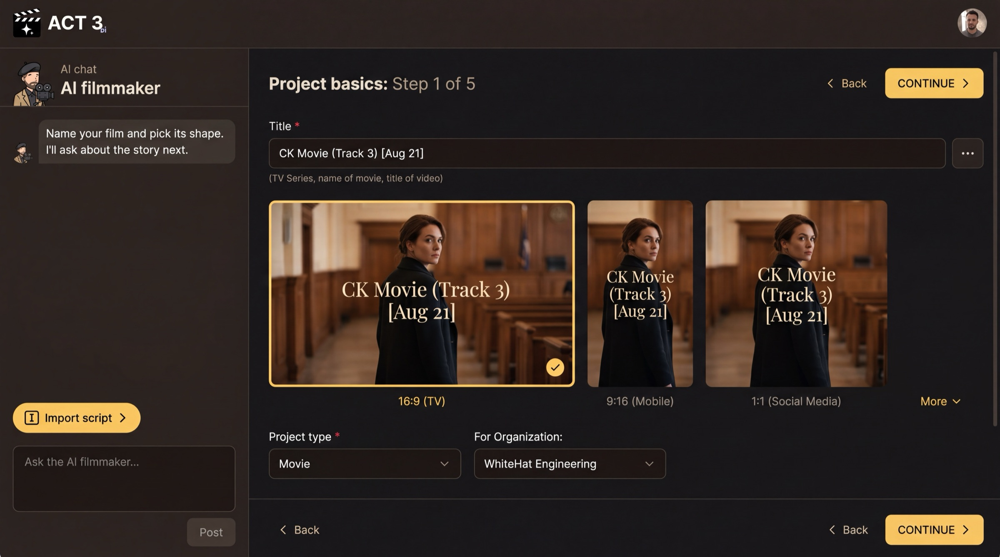

Step 2 of 7
Name your film
Give your film a title and pick its frame shape. Set the project type and organization. Then click CONTINUE.

CONTINUEWhat this page is
This is the first page of the New Project wizard. It creates the project itself. The tabs across the top of the wizard count your progress; on the Empty Script path there are four: Start Project, Script, Visuals and Render Style.
- Title is required. Use the name of the movie, the series or the video. You can change it later.
- Frame shape: 16:9 (TV), 9:16 (Mobile), 1:1 (Social Media), or More for other shapes.
- Project type and For Organization say what kind of film this is and which team owns it.
Your decision
The frame shape is the one choice to think about. It is the aspect ratio of every shot, so pick it for where people will watch: 16:9 for a TV, a laptop or a cinema; 9:16 for a phone held upright; 1:1 for a square social feed.
The Import script button in the AI chat skips ahead for people with a screenplay file. For an empty script, ignore it and press CONTINUE.
Why you go next to Script
With the project named, the wizard asks the big question: where does the script come from?